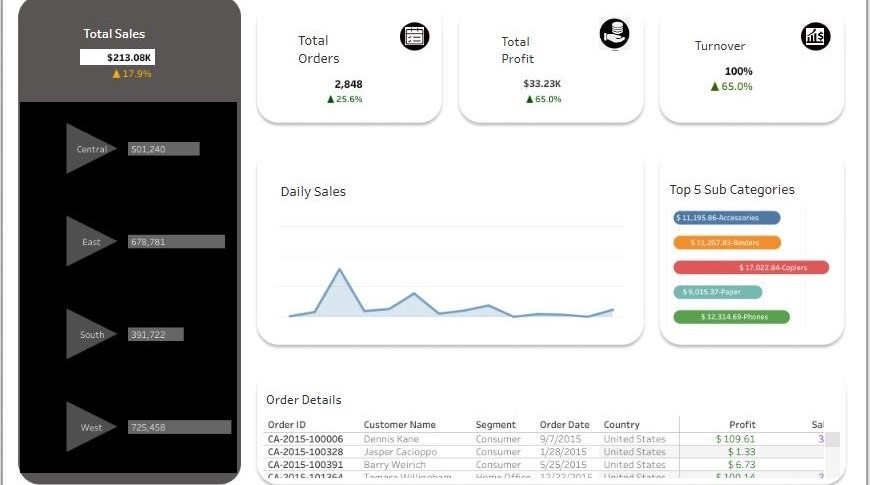
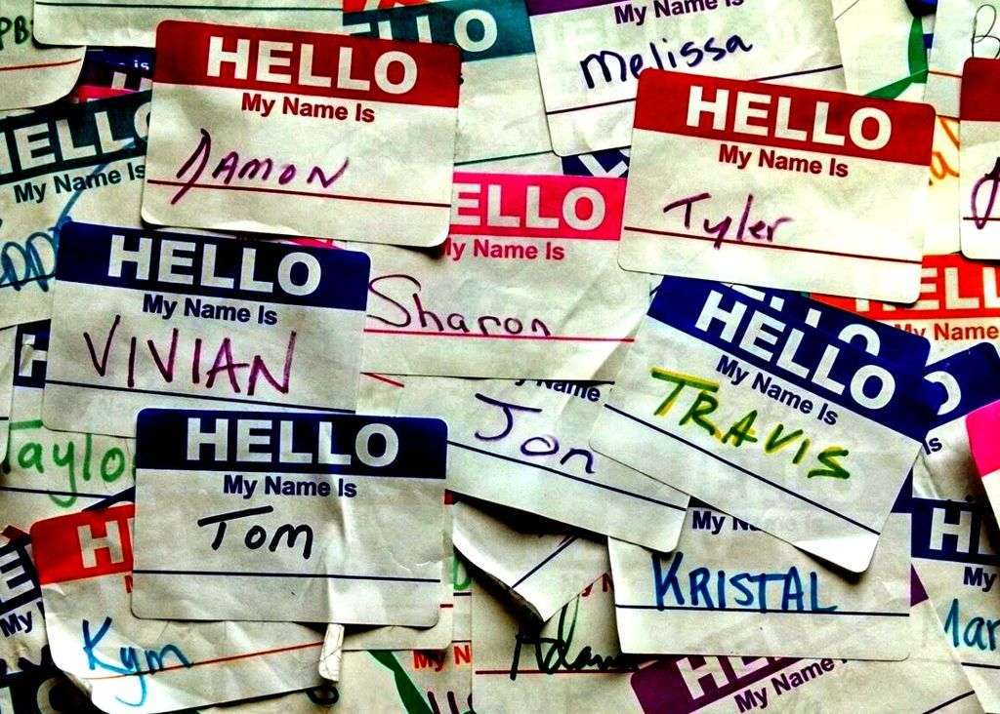
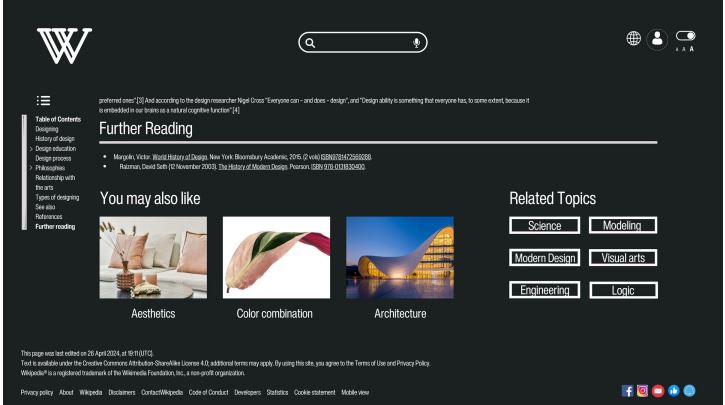

Hello! I'm Anusha Manchi Satish, a dedicated professional pursuing a Master’s degree in Management Information Systems (MIS) at California State University, Long Beach.
My studies here are expanding my knowledge in areas such as Business data analytics, Machine learning, and System design.
Before this, I had the opportunity to work at Philips HealthCare, where I gained hands-on experience that sharpened my skills in leveraging technology and data insights to drive business growth.
I enjoyed aligning product workflows, building CI/CD pipelines, and designing patient web systems, all of which made a significant impact on efficiency and performance.
I am passionate about continuous learning and innovation, love exploring new ways to use data for making informed decisions that drive success.
My technical skills span a variety of programming languages, databases, cloud and DevOps tools, advanced AI and machine learning techniques.
I’m always looking to share my enthusiasm for data and technology.
Let's connect and collaborate!
PHILIPS HEALTHCARE, SENIOR ANALYST
Overview: In my role at Philips Healthcare, I played a pivotal role in optimizing processes and enhancing system performance through various initiatives. From leading automation projects to implementing data-driven solutions, I contributed to achieving significant improvements in efficiency and cost savings.
Key Achievements:
- Aligned product workflows with Python/Oracle DB, boosted efficiency by 40% via async programming and refactoring.
- Built and streamlined CI/CD pipelines, achieving a 30% accuracy boost by Apache Airflow, R, and data manipulation.
- Designed HIPPA-compliant patient web system using Python, Django, MySQL, decreasing system downtime by 15%.
- Augmented image processing speed by 20% with Python scripting, scikit-learn, statistical analysis and Deep learning.
- Optimized heath check recommendation tool with SQL, Docker, and MLP, improving annual savings by $110k+
PHILIPS HEALTHCARE, SOFTWARE ENGINEER
Overview: In my role at Philips Healthcare, I played a pivotal role in optimizing processes and enhancing system performance through various initiatives. From leading automation projects to implementing data-driven solutions, I contributed to achieving significant improvements in efficiency and cost savings.
Key Achievements:
- Analyzed 1000+ customer feedback entries to resolve software upgrade issues, reducing complaints by 20%.
- Processed 5000 service reports using SQL queries to enhance product quality and increase customer satisfaction by 15%.
- Collaborated with 10 cross functional teams to prioritize product enhancements, driving a 25% increase in adoption rates
- Implemented root cause analysis on 50 OS migrations complaints, leading to a 30% reduction in service downtime
- Automated data validation checks using Python and Azure Databricks, by enhancing predictive analysis accuracy by 22%
PRDC INFOTECH, DATA ANALYST INTERN
Overview: As an intern at PRDC Infotech, I played a vital role in leveraging data to extract actionable insights and drive strategic decision-making. Through various tasks in data cleansing, preprocessing, and exploratory data analysis (EDA), I contributed to enhancing the organization's understanding of key trends and patterns within their datasets.
Key Achievements:
- Enhanced social media engagement and content tagging by 25% through LLM, NLP, and supervised ML algorithms
- Improved K-Means effectiveness by 30% through matplotlib, strategic feature engineering, and segmentation precision
- Advanced targeting accuracy by 40% through strategic implementation of Python in predictive modeling, resulting in a 25% boost in retention rates
DIRECTOR OF FINANCE
INTERNATIONAL STUDENT ASSOCIATION
California State University Long Beach
Key Achievements:
- Responsible for overseeing all financial matters and budgeting for our vibrant and diverse student organization.
- Key areas of focus include managing finances, budget planning, maintaining accurate financial records, and approving expenditures.
- Ensuring meticulous financial oversight and strategic budget allocation, support the organization's initiatives.
- Effectively managing the funds to support various cultural events, educational programs, and social activities that enrich the experience of our international student members
- Collaborating with other board members to align our financial strategies with the association's goals
GEN AI LEAD
AI RESEARCH CLUB
California State University Long Beach
Key Achievements:
- Led a team of 6 dedicated to advancing AI applications within our university.
- The main project involves building a GPT-based AI system designed to provide comprehensive information about campus resources, events, important documents, and the admissions process.
- Responsible for overseeing the development and implementation of cutting-edge AI projects
- Manage project timelines, resources allocation, coordinate research activities and maintain quality control
- Aim to develop AI solutions that significantly improve the campus experience for students, faculty, and prospective applicants.
SQL
Python
Tableau
Power BI
Databricks
Excel
Git
Java

Azure
AWS
Visual Studio
JavaScript
Heart Failure Condition and Survival Analysis
A machine learning model to predict the survival of patients with ventricular systolic dysfunction, a critical aspect of managing heart failure. Utilizing a combination of Decision Trees, Random Forests, Support Vector Machines, Gradient Boosting, and Light GBM algorithms, each model's hyperparameters is tuned to optimize performance and generalization. Feature selection analysis and the Cox Proportional Hazard Model is employed to uncover the key factors influencing heart failure survival. By providing medical professionals with actionable insights, this project aims to contribute to informed decision-making and ultimately improve patient outcomes in cardiac care.
Early Stages of Diabetes Prediction
A Machine Learning project focused on early diabetes identification through the development of classification models using Ensemble, K Nearest Neighbors, Decision Tree, Neural Networks and Support Vector Machine (SVM) algorithms. Achieving an 80% recall rate, the SVM model demonstrated high sensitivity in detecting diabetes cases. Performance analysis was conducted using chi square test,cross-validation and various evaluation metrics, ensuring the robustness and reliability of the predictions. The project highlights the potential of advanced machine learning techniques in early disease detection and proactive health management.

Modern US Sales Analysis
Tableau dashboard for comprehensive US Sales analysis, with a keen focus on vital metrics such as revenue, profit, total orders, and turnover. Through meticulous tracking of key performance indicators (KPIs) including profit margins and revenue growth, benchmarks crucial for effective regional comparison are established, particularly within the NEWC region. Various trends and daily sales variations across different regions provide actionable insights into percentage-based sales distributions, drive strategic decision-making in sales and marketing endeavors.

Customer Churn Analysis
The project involved an in-depth analysis of customer churn, focusing on key variables such as tenure and service usage to identify high-risk factors contributing to attrition. Using Power BI and SQL, an interactive dashboard was developed to visualize churn data, enhancing stakeholders’ ability to monitor trends and track key performance indicators (KPIs). This comprehensive approach provided actionable insights, leading to a significant 23% reduction in the churn rate, showcasing the effectiveness of data-driven decision-making in improving business outcomes.
PR Marketing Company
The SQL project showcases the development and implementation of a sophisticated Database Management System (DBMS) for a leading PR marketing company, designed to revolutionize client relationship management, media contact tracking, and campaign data handling. It includes a conceptual model, a logical model, a data dictionary, and a physical design of the database, alongside descriptions of expected tasks and related SQL queries. This strategic investment underscores the company's commitment to innovation and excellence, enhancing efficiency and driving success in the PR marketing sector.

American baby names trend
The project involves an in-depth analysis of American baby name trends using SQL and PostgreSQL. By examining large datasets spanning multiple timelines, the project identifies patterns and shifts in baby naming conventions. Advanced SQL queries and PostgreSQL functions are utilized to extract, manipulate, providing insights into the popularity of names over time, regional variations, and cultural influences. The analysis offers valuable information for researchers, marketers, and social scientists interested in understanding naming trends and their implications in American society.

Wikipedia User Interface Revamp
The project focused on redesigning the Wikipedia website through a sprint methodology, aimed at enhancing user experience and interface aesthetics. The redesign included updating the layout for better navigation, improving the readability of content, and incorporating modern design principles to make the site more visually appealing and user-friendly. Throughout the sprint, user feedback and usability testing were integral to refining the design, ensuring that the final product met the needs and preferences of a diverse user base. This project highlights the importance of iterative design processes and user-centered approaches in creating effective and engaging web interfaces.
Alibaba - an ant comes to end
The case study explores the evolution and challenges of Ant Group, a subsidiary of Alibaba Group. The study examines the strategic decisions made by Ant Group and the broader implications for the fintech industry. It delves into the company's main problems that include customer service inefficiencies and supply chain disruptions. Proposed solutions encompass real-time monitoring, predictive analysis, and improved inventory management. Through detailed analysis, the case study provides insights into the complex interplay between innovation, regulation, and market dynamics, offering valuable lessons for businesses navigating the evolving financial technology landscape.
by Cisco
by Microsoft and LinkedIn
by DataCamp
by Great Learning
AWS Academy
by Alteryx
by Datacamp
by Datacamp
by Linkedin